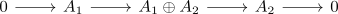

finite sum of artinian modules as artinian module
Proposition
Let \(R\) be a ring and $A_i$ be Artinian modules. Then the finite sum of modules
\begin{align*}
\bigoplus_{i=1}^n A_i
\end{align*}
is also artinian
Proof
corollary of induction and artinian modules satisfy short exact 2 out of 3 for the split exact sequence
